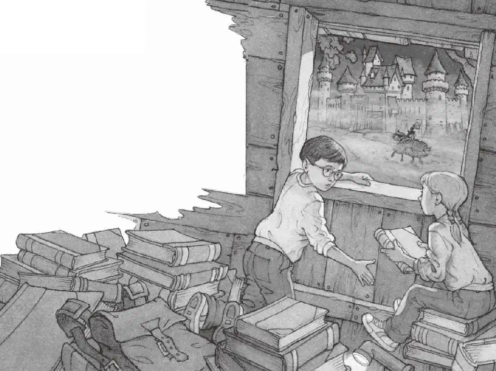

“这上面没有人！”安妮朝下面喊。
杰克想转身回家，但又想起树屋里有那么多书。
于是他也开始顺着绳梯往上爬。
快要爬到树屋时，他看见远处的天空有了亮光，黎明即将来临了。
他爬进树屋，摘下身上的书包。
安妮正用手电筒照着四处散落的那些书。
“它们还在这儿。”安妮说。
她把手电筒照在一本恐龙书上。
就是这本书，带他们去了恐龙时代。
“还记得那只霸王龙吗？”安妮问。
“当然记得！”杰克说。
他可是亲眼看见了一只真正的、有血有肉的雷克斯霸王龙，这经历怎么能忘记呢？
手电筒的光又落在一本关于宾夕法尼亚的书上，书里夹着一枚红色的丝绸书签。
“还记得那幅蛙溪的图片吗？”安妮问。
“当然记得。”杰克说。
正是那幅图片，把他们带回了家。
“这一本是我最喜欢的。”安妮说。
光束落在一本关于骑士和城堡的书上，里面夹着一枚蓝色的皮书签。
安妮把书翻到夹着书签的那一页。
上面有一幅图片，是一名骑士骑着黑马正朝一座城堡走去。
“安妮，把那本书合上，我知道你在想什么。”杰克说。
安妮指着画上的骑士。
“别这么做，安妮！”杰克叫道。
“请让我们亲眼见见这个人。”安妮说。
“不，不要！”杰克大喊。
就在这时，风声开始呜咽，树叶开始颤抖。
同样的事情又发生了。
“我们要出发了！”安妮喊道，“快蹲下！”
风声更响了，树叶颤抖得更厉害了。
树屋开始旋转，越转越快。
杰克把眼睛闭得紧紧的。
然后，一切都静止了。
完完全全地静止不动了。
杰克睁开眼睛，他浑身都在发抖。
空气潮湿、寒冷。
下面传来了马的嘶鸣声：“咴儿，咴儿！”

“我们好像到了。”安妮轻声说。
她手里仍抓着那本骑士和城堡书。
杰克朝窗外张望。
一座巨大的城堡在雾中若隐若现。
杰克看了看四周，他们现在是在另一棵大橡树上。
“看，杰克！”安妮喊道。
树下，一名骑士正骑着黑马经过。
“天哪，太可怕了，我们不能留在这儿。”杰克说，“我们必须先回家制订一个计划。”
杰克拿起那本宾夕法尼亚的书，翻到夹着红色丝绸书签的那一页。
杰克指着那幅蛙溪的图片，说：“请带我们——”
“不！”安妮一下子把书从杰克手里夺了过去，“我们留下来吧！我想参观一下城堡！”
“你疯了？我们必须先把情况了解清楚才行。”杰克说，“先回家吧。”
“就在这里了解吧！”安妮说。
“不行，快把书给我。”杰克伸出手。
安妮把书递给杰克，说道：“好吧，你自己回去吧，我要留下来。”说完，她把手电筒别在了腰带上。
“等等！”杰克说。
“我要去偷偷看一眼，就一眼。”安妮说着就顺着梯子迅速往下爬了。
杰克暗暗叫苦：“好吧，她赢了。”
杰克不可能撇下安妮独自离开，而且，他自己其实也想偷偷看一眼呢。
杰克放下宾夕法尼亚的书，把骑士和城堡书装进书包。
然后他顺着梯子爬下树，走进凉爽的、朦胧的雾气中。